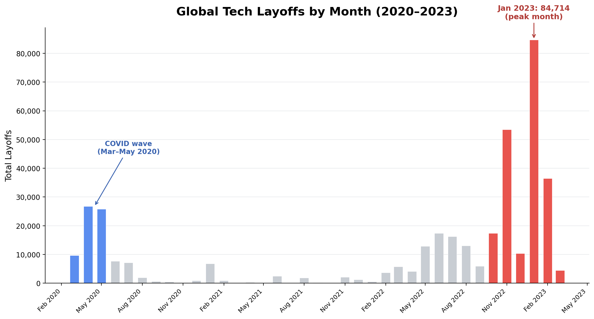
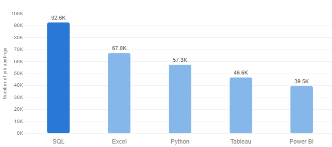

Coffee Sales Dashboard
Cleaned 1,000+ coffee transactions and built an interactive Excel dashboard, revealing non-loyalty customers outspent loyalty members by $2.81 per order, suggesting the loyalty program failed to sustain customer spend

Data Analyst with a skilled foundation in SQL, Excel, Tableau, Python, and PowerBI @patrickchau
Cleaned 1,000+ coffee transactions and built an interactive Excel dashboard, revealing non-loyalty customers outspent loyalty members by $2.81 per order, suggesting the loyalty program failed to sustain customer spend
Cleaned and analyzed 1,633 companies across 51 countries in PostgreSQL: removing duplicates with ROW_NUMBER(), standardizing fields, converting data types, and imputing missing values via self-join, revealing the US accounted for 66.9% of global layoffs, 2022 was the peak year, and early-stage startups averaged a 70% layoff rate, nearly 4x higher than established public companies.

Built an interactive Power BI dashboard analyzing 10,000+ employee survey responses across satisfaction, work-life balance, and department to surface actionable workforce insights for leadership.

Cleaned 1,015,004 London bike ride records in Python and built an interactive Tableau dashboard featuring a 20-day moving average and heatmap, revealing peak ridership at 19.9°C and a 66% drop in rain vs clear conditions.

Analyzed 32,000+ data job postings in SQL across salary, skills, and demand, revealing that SQL appears in 92,628 job postings, remote roles dominate top-paying positions averaging $220K+, and Snowflake is the most optimal skill balancing high demand and strong compensation.
